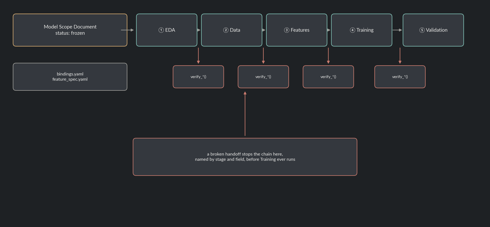
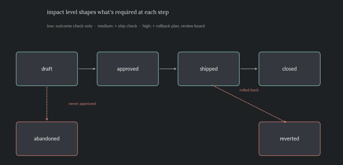
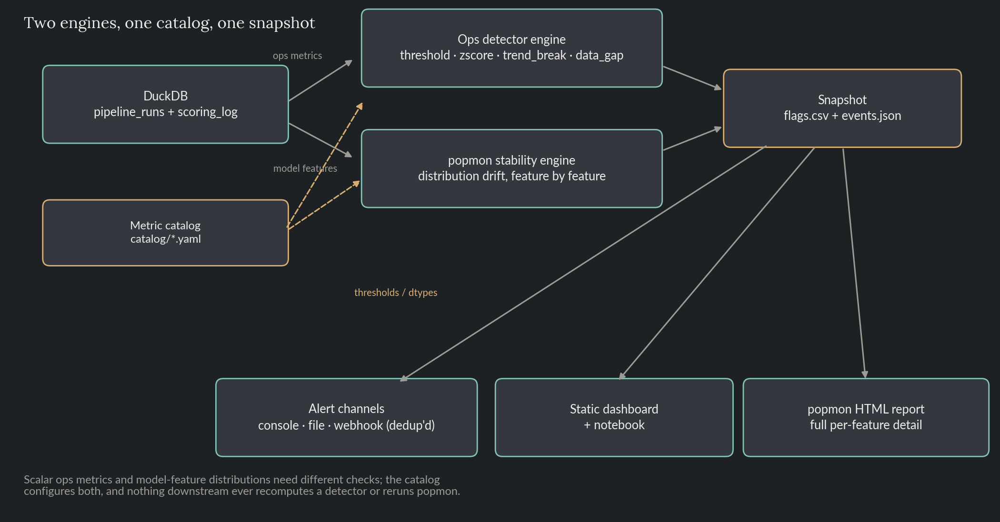
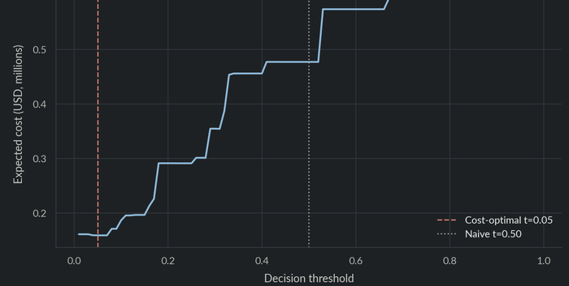
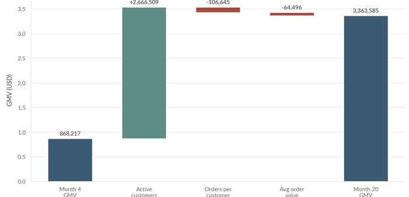
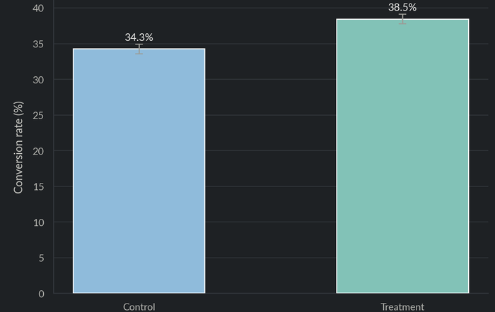
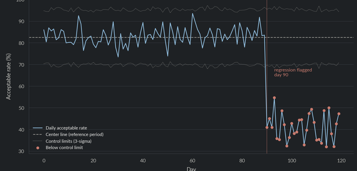
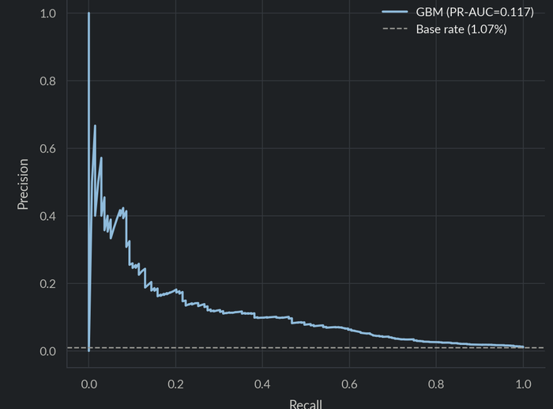
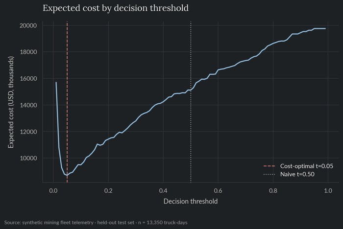
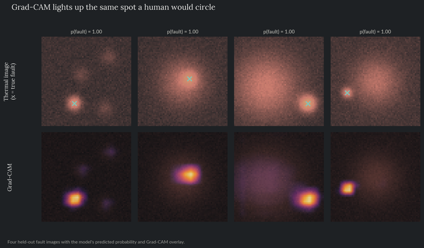

“The purpose of models is not to fit the data but to sharpen the questions” —S. Karlin










Full source, tests, and CI
for every project.
It's part of my regular workflow, mainly for automating repetitive tasks. I do favor Spec-Driven Development over unstructured vibe coding because it keeps AI-assisted work reviewable and reliable. All output is validated before it ships, and only used where it's a genuine improvement over manual work.